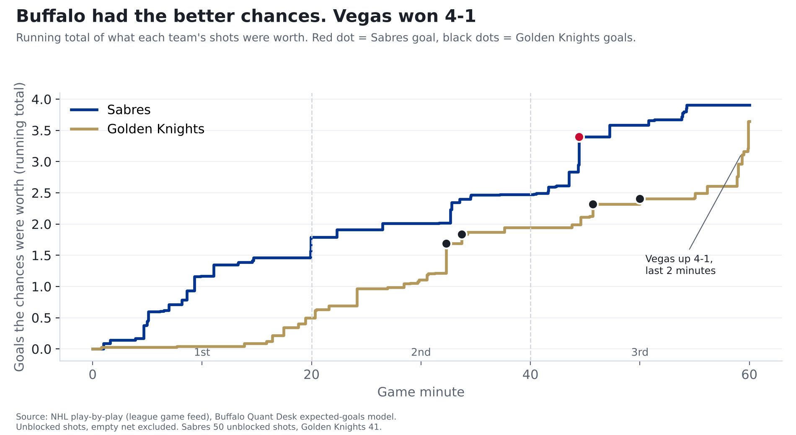
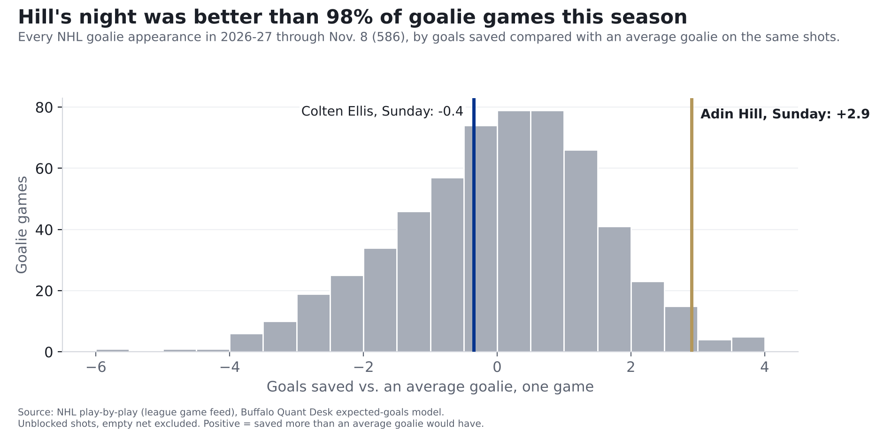

Golden Knights 4, Sabres 1: Buffalo had the better chances. Adin Hill had the better night
Buffalo's chances were worth more than Vegas's. Adin Hill stopped 28 of 29 and had one of the league's best goalie nights. Our model leaned slightly to Vegas, a hit, but a near coin flip.
Finding: The Sabres lost 4-1 Sunday, but they had the better chances: their shots were worth 3.9 goals to Vegas's 3.6, and 3.2 to 1.8 at full strength. The difference was in goal. Adin Hill stopped 28 of 29 shots, about 2.9 goals better than an average goalie, one of the best goalie nights in the league this season. On shots like Buffalo's, the Sabres score one goal or fewer only 8% of the time.
One game, 2026-11-08, in Buffalo. Our pregame story.

How we measure "chances"
Every shot has a chance of going in, based on where it was taken and what kind of shot it was. Add those up and you get what a team's chances were worth in goals. Sunday's goals show the range: Marner's shot from 3 feet had a 47% chance of going in; Hertl's second goal, from 34 feet, about 9%. The shot locations come from the NHL's own play-by-play for every game. (The full explanation is in our story on last year's 50-win season.)
Sunday, Buffalo's 50 shots that weren't blocked were worth 3.9 goals. Vegas's 41 were worth 3.6. Buffalo scored once.
To see how unusual that is, we replayed Sunday's game 20,000 times, letting each shot go in or miss at its own chance. Buffalo won 46% of the replays, Vegas 38%, and 16% ended tied. The Sabres scored one goal or fewer in only 8% of them. (That 46% happens to match our pregame number. It's a coincidence: the pregame number came from each team's form before the game; this one comes only from Sunday's shots.)
The full-strength edge was clear: 3.2 to 1.8 in chances. When someone was in the penalty box, on a power play either way, Vegas won 1.8 to 0.7. And a full goal's worth of Vegas's 3.6 (1.0, on 7 shots) came in the final two minutes, after it led 4-1 and the game was decided.
A big first period, then a shorthanded goal turned it
| Period | Sabres chances, in goals | Golden Knights chances, in goals | What happened |
|---|---|---|---|
| 1st | 1.8 | 0.5 | Buffalo's best period. No goals. |
| 2nd | 0.7 | 1.4 | Vegas scores twice, the first one shorthanded. |
| 3rd | 1.4 | 1.7 | Beck Malenstyn makes it 2-1; Tomas Hertl answers twice. |
The first period was the Sabres' game to take: their chances were worth 1.8 goals to 0.5, and it stayed 0-0. The turn came in the second, when Mitch Marner scored from 3 feet while Vegas was killing a penalty.
That sums up Buffalo's power play Sunday: Vegas got more out of it than Buffalo did. Vegas's shorthanded shots were worth 0.8 goals; Buffalo's power-play shots were worth 0.5, and it didn't score with the extra man.
| Period | Time | Team | Scorer | Shot | Chance it went in |
|---|---|---|---|---|---|
| 2 | 12:17 | Golden Knights | Mitch Marner | wrist from 3 ft, shorthanded | 47% |
| 2 | 13:43 | Golden Knights | Jack Eichel | wrist from 16 ft | 15% |
| 3 | 4:26 | Sabres | Beck Malenstyn | wrist from 4 ft | 44% |
| 3 | 5:43 | Golden Knights | Tomas Hertl | wrist from 10 ft | 20% |
| 3 | 10:00 | Golden Knights | Tomas Hertl | wrist from 34 ft | 9% |
The goalie duel went the other way
Coming in, these two were at opposite ends. Colten Ellis had saved 2.2 more goals than an average goalie would have on the same shots this season (6 games). Adin Hill had allowed 1.9 more than an average goalie would have (8 games). Both numbers come from fewer than 10 games, so they swing fast. (Our pregame story said 1.8; the number shifts a little as each night's games are added.)
Sunday flipped it. Hill faced Buffalo shots worth 3.9 goals and allowed 1: 2.9 goals better than an average goalie. Only 12 of the 586 goalie games in the NHL this season have been better. Ellis faced Vegas shots worth 3.6 goals and allowed 4: 0.4 worse than average, a little below, not a bad night. In one afternoon, Hill went from 1.9 below average for the season to 1.0 above (9 games now); Ellis went from 2.2 above to 1.8 (7 games).

Why goalies aren't in our prediction model. Before Sunday's game we tested it: we split past seasons in half and checked whether a goalie's first half told us about his second half. It barely did, far less than how many chances a team gives up carries over. And adding the starting goalie didn't make our game predictions any better. Sunday is an example: the goalie with the worse numbers coming in had one of the best nights in the league.
Vegas got in the way
Buffalo tried 78 shots and Vegas blocked 28 of them. A team has about 15 shots blocked in a typical game, and only 7 times in 556 team games this season has a team had 28 or more blocked. Blocked shots don't count toward Buffalo's 3.9.
Receipts: our pregame call
Before the game we logged one call on the Ledger: a 46% chance the Sabres win. That meant our model leaned slightly toward Vegas, and Vegas won, so it counts as a hit. Don't read much into it: our pregame story noted that leans this slight (50-55%) had come in only about half the time in testing. Hit or miss, it stays up.
We also score every call: take the gap between the chance we gave and what happened, and square it. Lower is better. Our 46% on a Buffalo loss scores 0.21; a straight 50/50 guess would have scored 0.25. So a bit better than a coin flip, on one game. The point is the season-long record.
We're not taking a victory lap. The model expected a close game with Vegas slightly ahead. It was close, but Buffalo was the one slightly ahead, and our model doesn't try to predict a goalie's hot night; our tests say it can't be done reliably from a goalie's recent numbers.
What it means for Buffalo
- Buffalo won at full strength, 3.2 to 1.8 in chances. And it did that against a defense that had given up the 4th-fewest chances overall coming in. In all, the Sabres created 3.9 goals' worth, well above their 3.1 average.
- The power play hurt, but it didn't decide it. With someone in the penalty box, Vegas had the better chances, 1.8 to 0.7, though 0.9 of that came in the final two minutes with the game decided. Buffalo's power play came up empty, and Marner's shorthanded goal opened the scoring. Three of Vegas's four goals came at full strength, where Buffalo had the better chances.
- What carries over is the chances, not the goalie's night. Two of our tests point the same way. The chances a team gives up carry over from one half of a season to the next far better than a goalie's numbers do, and a team's edge in chances carries over from one season to the next far better than its finishing or goaltending. One night isn't a trend, but Buffalo's even-strength edge is the kind of thing that tends to last; Hill's afternoon is the kind that doesn't.
- Ellis was a little below average, not bad. He's still 1.8 above average for the season (7 games).
For the stat-heads
- Expected goals (xG): our gradient-boosted model on unblocked, non-empty-net shots, rescaled per season so league xG equals league goals. BUF 3.91 xG on 50 unblocked shots (29 on goal); VGK 3.65 on 41 (26 on goal).
- Replays: 20,000 simulations, each shot an independent coin flip with p = xG. BUF win 0.459, tie 0.159, loss 0.382.
- GSAx = xG on unblocked shots faced minus goals allowed. Hill +2.91 (29 shots on goal), Ellis -0.35. Hill's game ranks 13th of 586 2026-27 goalie games. Season GSAx before/after: Hill -1.86/+1.05, Ellis +2.18/+1.83 (this season only; shot values rescaled with games through Nov. 8, so Hill's pregame -1.8 reads -1.9 here).
- Strength: five on five BUF 3.19, VGK 1.84; all other situations BUF 0.72, VGK 1.81. Final two minutes (58:00 on): VGK 1.04 on 7 shots.
- Blocked attempts: attributed to the shooting team. Power play = 5v4, 5v3, 4v3 from the shooter's side.
- Ledger P0001: p = 0.46, outcome 0, Brier 0.2116; scored a hit because p < 0.5 and the event didn't happen. Model nhl-game-v0.1.